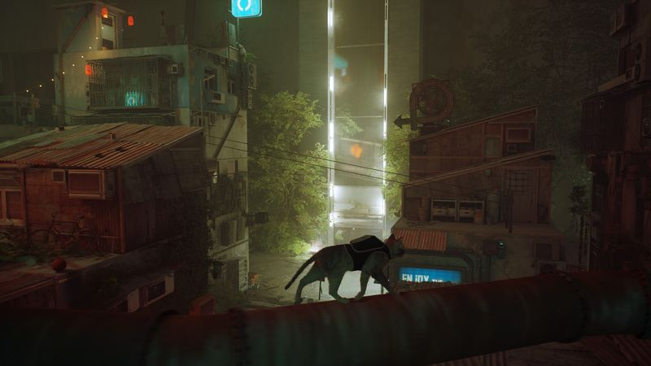
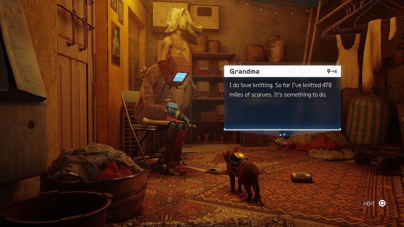

The thirty-second version
Short, gorgeous, mostly a mood.
The first game where I checked on the kids because a cartoon cat looked sad.
Stray is a short atmospheric adventure about a cat in a cyberpunk city. As a mood piece it's genuinely beautiful and none of us regretted the six hours. As a game it's a fairly simple linear puzzle-adventure with some light stealth. Play it in one sitting, on a lazy Saturday, and don't come in expecting anything more clever than a very good cat.
Okay, what is this thing?
A cat falls through a hole in a wall and lands in a cyberpunk city where all the humans have been replaced by little robots in beanies. The cat is a very good cat. It miaows. It knocks stuff off shelves. It runs across pipes and up sofa arms and all three of us watched our own cats side-eye us during the playthrough. If you're immune to that, most of Stray does not have a plan B.
As gameplay it's a chapter-based linear adventure with light stealth and light platforming. Jumps are contextual, so you press a button and the cat goes where the cat should go. That sounds like a compromise but it's actually the mercy of the design. Where it goes short is that the puzzles are simple and the stealth is basic. What it gives you back is a hand-crafted city that we would live in.


Why it escaped the group chat
- A cat-first adventure across a linear neon city with light stealth.
- Contextual jumping means you never miss a jump, but never choose one either.
- Runs about six hours, which is what an evening and a Saturday morning is.
Three dads enter
01
Dad Who Skipped the Tutorial
The rarest positive review I can give.
I'm the guy who's finished four games in ten years. I finished Stray. I didn't complain about the mechanics because there aren't any to complain about. I said 'that's a nice game' and put it down, and if you knew me you'd understand that's a rave. Also my real cat sat on my lap for the last hour. Story checks out.
02
The Descent Guy
A vibes game, I'm mid on the vibes, and the city carried it.
I was ready to be sniffy. Instead I sat down for one session, finished it, and made a note about how well the vertical level design works once you take away the ability to fail a jump. I want the world to know I'd have preferred an actual traversal skill tree. I also can't stop showing the other two my screenshot of the cat curled up under a lamp.
03
Normal-ish Dad
Short, complete, no seasons and no season pass.
Six hours and it rolls credits. No live service, no daily login, no NG+. I played it on a rainy Saturday with a mug of tea and had a lovely time. Would I pay full price? Probably not. Was it worth every minute? Yes. Sometimes that's all a game has to be, and I'm grateful for it.
Who it is for and what to watch
Invite these people
- Cat people, obviously
- Anyone who wants a beautiful thing to finish in one long sitting
- Playdate-friendly co-watching with kids who like sad robots
Dad caveats
- It is genuinely short. Buy on that assumption, not despite it
- Puzzles are mild and stealth is basic. Not why you're here
- You will miss the cat for a week afterwards
Receipts
All three of us finished it in single sessions on PC, roughly six hours each. Nobody replayed.